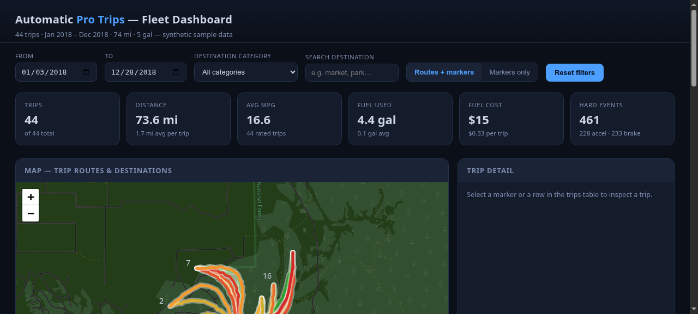
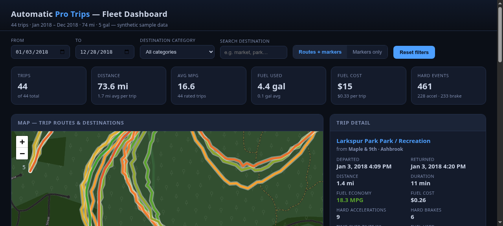

Car Trip Data Visualizer
The folder
The 2000 Ford Explorer was the family car. My dad’s hand-me-down, the one my family had been in as long as I can remember. An Automatic Pro logger sat in it and quietly worked through the whole time I had it: every trip I made, where I went, how hard I braked, how many minutes I spent over 80. Each export went up to a Google Drive folder.
I forgot about it.
Years later, after I’d picked up Python and the rest of the data-processing toolkit, I found that folder again. The logger was installed for fuel consumption and total miles, and those were the columns I expected to read. The thing that kept me reading was the other half: where I’d actually gone, and how often I’d kept going there. So I built a dashboard for that.
What it shows
One page, everything about a trip one click deep:
- Every trip on a Leaflet map as a polyline, colored by MPG, with cluster markers and click-through from the whole set down to a single trip you can zoom into.
- KPI cards for the filtered set: distance, MPG, fuel, cost, hard-event counts (hard acceleration, hard brakes, minutes over speed).
- Three Chart.js bar charts: destination category, miles by month, MPG distribution. They all follow the same filters as the map.
- A detail panel, one trip at a time, with the destination as a live Google Maps link, plus filters on top: date range, destination category, destination search.

The two things that were worth the trouble
Two things about the Automatic Pro export were worth the trouble, and the code is mostly what deals with them:
No header row. The sheet is twenty raw columns, and the order
is the format: the app knows column four as duration,
column thirteen as map_url, and so on, by index. The columns can
disagree about types too. Duration shows up either as a fraction of a day or
as HH:MM, both of them present in real exports, and the parser
handles both.
The route hides in a Google Maps URL. Each trip’s
map_url carries the entire route as an encoded
polyline, path=enc:…. The app regexes it out, decodes it
server-side, and thins anything over 100 points so the map stays light. What
the API hands the frontend (route) is already a
[[lat, lng], …] list ready to throw at Leaflet.

Running it
No database, no build step. The .xlsx files are the data store,
and the app looks for exactly two filenames in the working directory,
Automatic Pro Trips.xlsx and
Automatic Pro Trips (1).xlsx. Honest footnote: it’s built
around the names Automatic Pro gives its exports, so “renaming”
is a code edit, not a config option. A renamed export sitting there just
silently won’t load.
The repo ships a synthetic 44-trip set regenerated from seed 2026 (fake
towns, the real schema, no header row), so the same code you read is the
code that runs. The real trips stay in that Drive folder.
places_cache.json maps every trip’s end coordinate to a
place label and a category; it’s optional, and without it the
dashboard falls back to “Unknown”, the category chart goes flat,
and the destination filters lose their names. Regenerate it with
geocode.py, which reverse-geocodes the cluster centroids
through Geoapify (an API key in .env).
The tiles cost one dead end
The first pass used CARTO’s dark tiles, which now quietly 401 without a paid key. I didn’t want to buy an API key for a dashboard about a car I no longer drive, so the fix that stuck is stock OpenStreetMap tiles under a CSS invert filter. Looks fine, costs nothing, and the map underneath it doesn’t change.
Tech & approach
Python throughout, and most of it small: app.py
is a Flask app that parses the sheet, decodes the polylines, and serves the
dashboard plus three routes (/api/trips,
/api/meta, and the HTML). The frontend is
templates/index.html with static/app.js and
static/style.css: Leaflet 1.9.4 with MarkerCluster 1.5.3 for
the map, Chart.js 4.4.1 for the bars, all off CDNs, no bundler.
make_sample_data.py rebuilds the 44-trip seed set, and
geocode.py is the standalone one-off that (re)builds the places
cache.
What made it stick
The map is the dashboard. The KPI cards and the filters sit around the polylines, because when I opened that folder I wasn’t looking for fuel statistics, I was looking for where I’d been. The 44 seed trips stand in for the 18 months of the real folder with the same columns, the same header-less format, and the same route hiding in a URL. Point the app at the real exports and the code path is identical; only the numbers change.